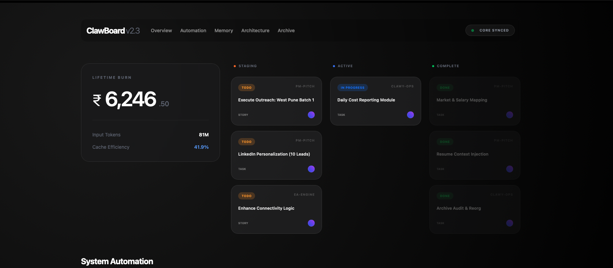

ClawBoard.
A centralised operations dashboard for monitoring autonomous agents, tracking LLM costs across providers, and maintaining visibility over workflow health at a glance.

Rationale
When you run multiple autonomous systems — Claude skills, n8n workflows, cron-triggered scripts — the question stops being "can I automate this?" and becomes "do I know what's running, what it costs, and when it breaks?" ClawBoard exists to answer that question with a single interface.
Design
The UI prioritises information density without clutter. Glassmorphic card system, high-contrast data grids, and bold typography designed to surface signal from complex system telemetry. Every widget answers a specific operational question: cost per project, agent throughput, failure rate, time since last successful run.
Planned Modules
- Cost Watchdog: Token usage aggregation across Claude, OpenAI, and Gemini with per-project attribution and week-over-week trending.
- Agent Status: Health and throughput monitoring for each autonomous thread — MCP servers, n8n workflows, scheduled scripts.
- Task Kanban: Synced with Obsidian project boards and Asana for unified task visibility.
- Workflow Inspector: Drill-down into individual n8n execution logs, error states, and retry patterns.